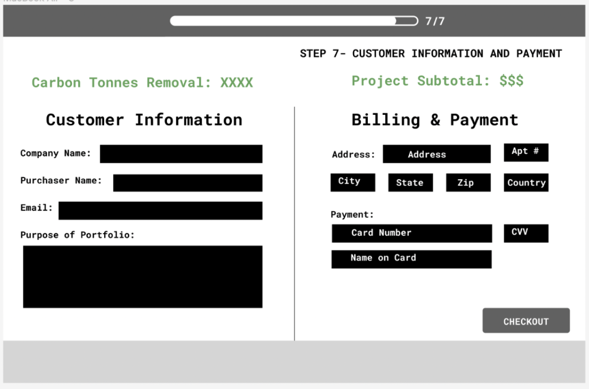
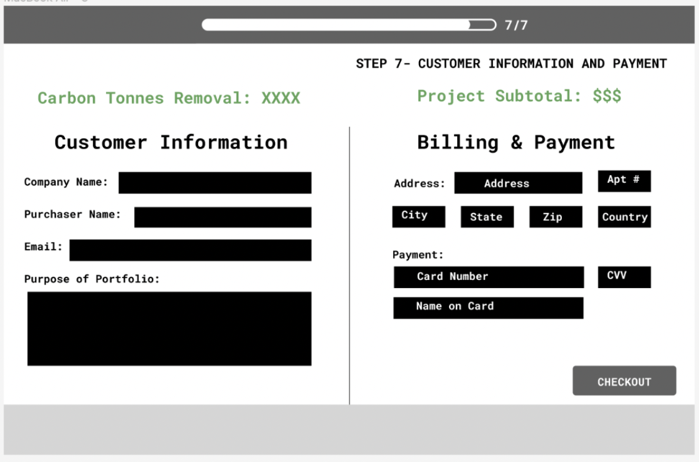

Purchase Flow Design
Empowering Companies to Take the Lead on Climate Change
CUR8, a UK based company, designs carbon removal portfolio solutions for its customers. Their current website allows users to input their carbon removal goals, and budget and then curates a summary portfolio of carbon removal credits they can purchase. However, the current flow lacks a purchase flow option. For this project, I worked with a team to design a hi-fidelity prototype purchase flow for CUR8's site.
THE PROBLEM
The current CUR8 site allows users to curate a portfolio of purchasable carbon credits they are interested in purchasing. However, there is no option to actually purchase credits. Currently, customers must communicate directly with team members at CUR8 before purchasing. For smaller transactions, CUR8 wants to give its customers the option to review their portfolio, give feedback and ask questions, and then submit a purchase request which CUR8 can approve which would allow the customers to directly purchase their portfolio.
Why it Matters:
Creating an online purchase flow option will enable CUR8 to run more efficiently and to service more customers, driving sales. Importantly, giving customers the choice to purchase carbon creidts online will help drive the reduction of carbon emissions and promote a greener future.
RESEARCH
Research that Influenced my Work:
In designing the purchase flow, we conducted comparative analysis on different websites purchase flows. This was a bit challenging because we couldn't identify any companies that provide a similar service that also has a purchase flow on their site, so we had to think critically about what would make most sense. In most purcahse flows, users have the ability to review contents in their cart before moving to purchase. However, since CUR8's customers will be purchasing curated portfolios worth thousands of dollars and with important data about carbon tonnes removed, geography, and type of carbon removal, we needed to find ways to display all this information in a digestable way for users to understand and review before moving to make a purchase request.
The audience of this purchase flow will be CFOs and other company executivies who are making the purchase on behalf of their company.
PROCESS
Original Sketches


First Iteration Wireframing
We incorporated ideas from all our teams sketches to create wireframes. We included more detailed breakdown of the portfolio and created a sharing option so the user can share the portfolio with another stakeholder in their company before purchasing the portfolio.

 


Second Iteration Wireframing
We revised our original design to make sure the portfolio summary was more detailed including important details about every project within the portfolio. This way, when users invited stakeholders, the stakeholder would be sent the same detailed breakdown the original viewer saw. We also added a "skip" button to allow users to skip adding stakeholders. After feedback from CUR8, we updated the purchasing step to be a purchase request form rather than a direct purchase step because CUR8 would need to approve the portfolio to make sure the credits are availble for purchase before users can actually purchase. Also, many of the purchases are large sums of and won't be done through creidt card. Crucially, we designed a invited stakeholder flow, seperate from the main flow to demonstrate what invited stakeholders would see.


Invited Stakeholder Flow
Third Iteration Hi-Fidelity
We created a hi-fidelity prototype following CUR8's color palette and branding guide. For inviting stakeholders, we used a pop-up box that appears atop the portfolio summary page to indicate that that page is what stakeholders will be sent. Once users complete or skip this step, they will review a summary of their portfolio again which looks like a receipt to mimic a checkout experience. Next, users will submit a purchase request.


SOLUTION
We met with members of the CUR8 team after our third iteration and incorporated their feedback into the final solution. We removed the filtering option from the portfolio breakdown page since typical portfolios don't include many diverse project types. Once users are ready to submit a purchase request they are reminded to invite a stakeholder if they chose to skip that step earlier. Aditionally, the purchase request page gives users more transparency, explaining that CUR8 must approve their portfolio before purchase. On the final step, users learn that they will be notified by CUR8 once their request is approved so they can submit their purchase.
Impact: By incorporating the feedback of CUR8 into our designs, we were able to produce a purchase flow the CUR8 team was very happy with. We created a purchase flow that allows customers to work collaboratively in a chat system with other members of their company to review the portfolio and leave questions and feedback that the CUR8 team can access. We provided a receipt like summary of the customer's portfolio, mimicking the cart-like shopping process common in many online purchase experiences. Overall, this process helps increase transparency between CUR8 and its clients by showing the steps to purchasing a portfolio and communicating what the next steps are.
Final User Flow


Invited Stakeholder


EXPERIENCE THE PURCHASE FLOW
TAKEAWAYS
This project taught me how to brainstorm with a team and pull the best features from each of our ideas to create a strong design. It also taught me the improtance of professionalism as our work had significant impact for a real company that does important work in addressing climate change. Lastly, this experience has emphasized for me the importance of being thoughtful with every feature I add to a page.
MY ROLE
I worked with a talented team of designers for this project. I created sketches, and designed the feedback chat design feature for invited stakeholders. I also worked with the team to incorporate feedback from CUR8, our peers, and professors.